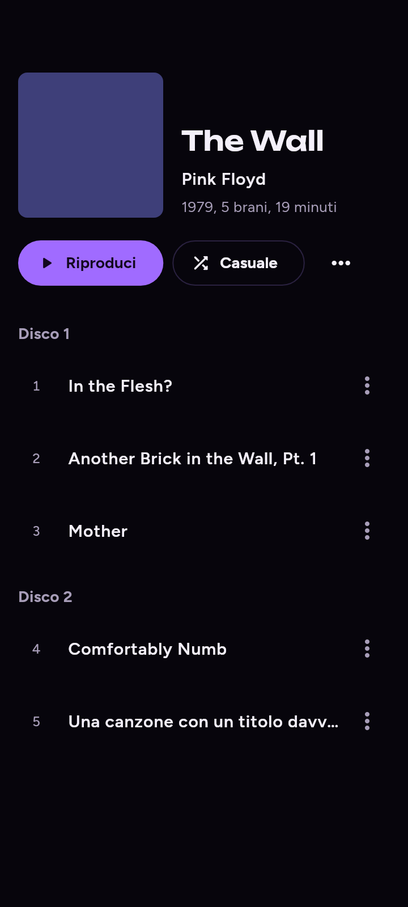
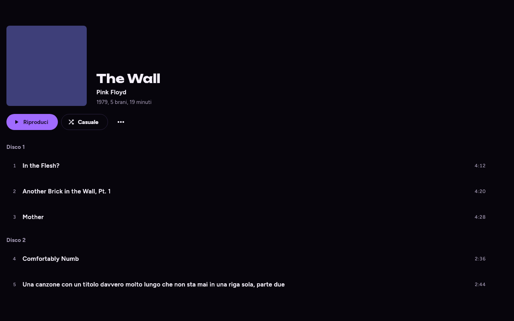

Disco 1
1
Anna e Marco
4:11
2
Balla balla ballerino
4:34
3
Cara
4:19
4
Futura
4:56
5
Stella di mare
4:20
6
Telefonami tra vent'anni
4:18
Disco 2
7
Futura (dal vivo)
5:01
8
Cara (dal vivo)
4:43
Dopo: testata guidata dalla copertina, righe compatte. Dati di esempio (album «Dalla», edizione con secondo disco).

Schermata attuale (album).
